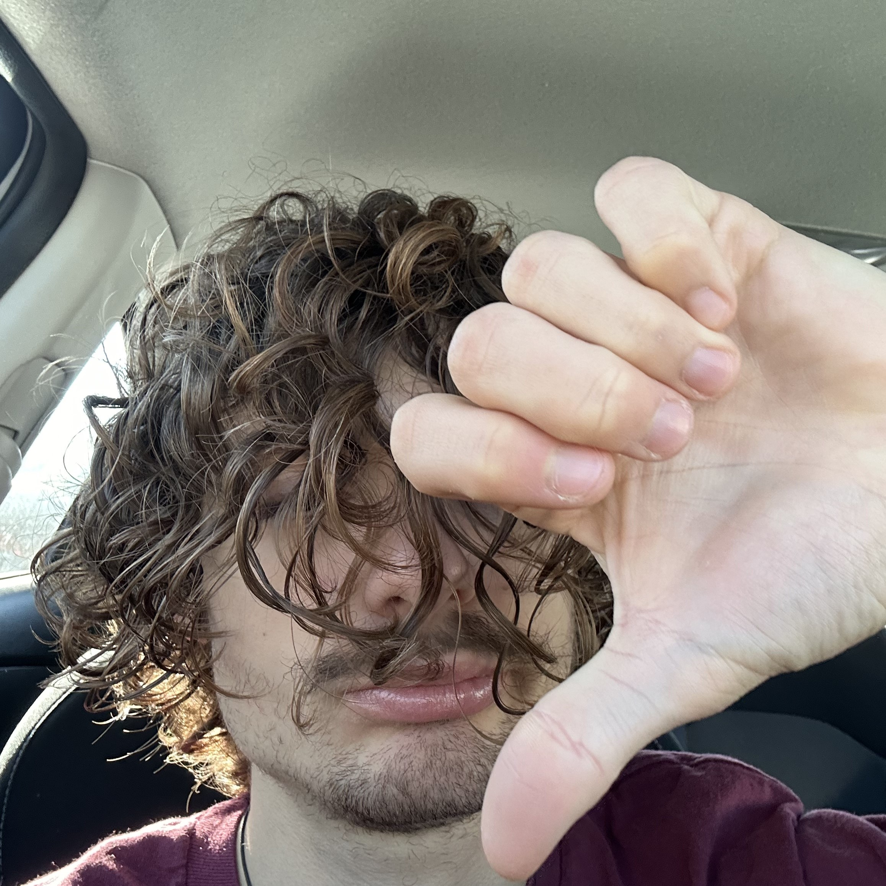

Kado Amalfitano

About Me:
I am 20 years old, and living in Sawtell Los Angeles. Right now, I work part time at WholeFoods, and invest in stocks. I am interested in the arts, I love music, and have tought myself how to produce in a software called Abelton. I am learning web development because, I purely find it interesting, and wanna be able to build all the computer things I imagine :)
Education:
- School was never my thing. I say this with pride as I put myself though the education system despite all the trials and tribulations faced. I graduated from CVUSD Adult High School Acadamy top of my class, and 2 months early, with an adult equivlency degree.
- I plan to furture my education once I find my true calling in life that allows me to use all my artistic stills and talents.
Work Experence:
- I worked as a barista at three coffee shops:
-
HoneyCup Coffeehouse
- Ragamuffin Coffee Roasters
- Starbucks
- currently working at WholeFoods as a costumer service, prepared foods team member
Skills:
- Music
- Audio recording
- Sound mixing and mastering
- Plays guitar, ukelele, and sings
- Cooking
- Arts:
- Coding:
Quick Links:
For my crochet website: click here
For my contact info: click here
Kado Amalfitano 2025 ™